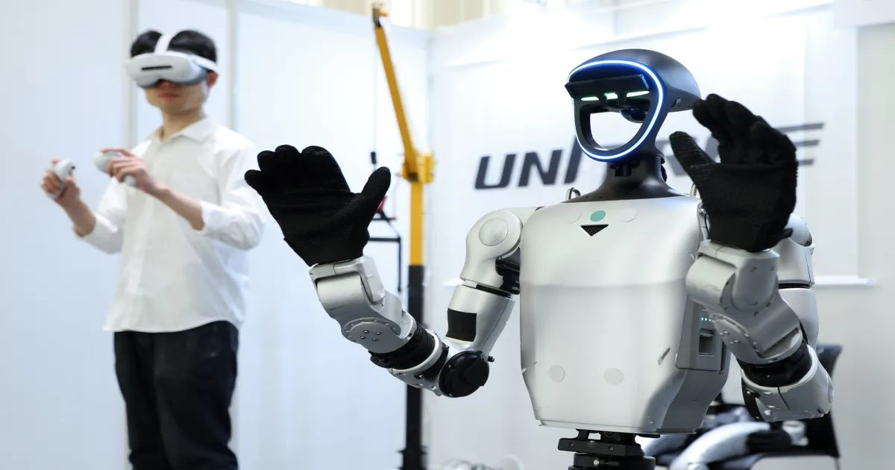

Инсайдер Nvidia, ставший венчурным капиталистом, рассказал, почему робототехника еще не достигла своего момента ChatGPT
Амуля Вишванат, которая семь лет занималась маркетингом продуктов для робототехнических платформ NVIDIA, говорит, что робототехника в настоящее время находится в своей «эре Лего», а основные строительные блоки, такие как приводы, роботизированные руки, программное обеспечение и стандарты безопасности, все еще перестраиваются.
Эта точка зрения противоречит тем, кто считает, что робототехника, основанная на общей базовой модели, вот-вот ...